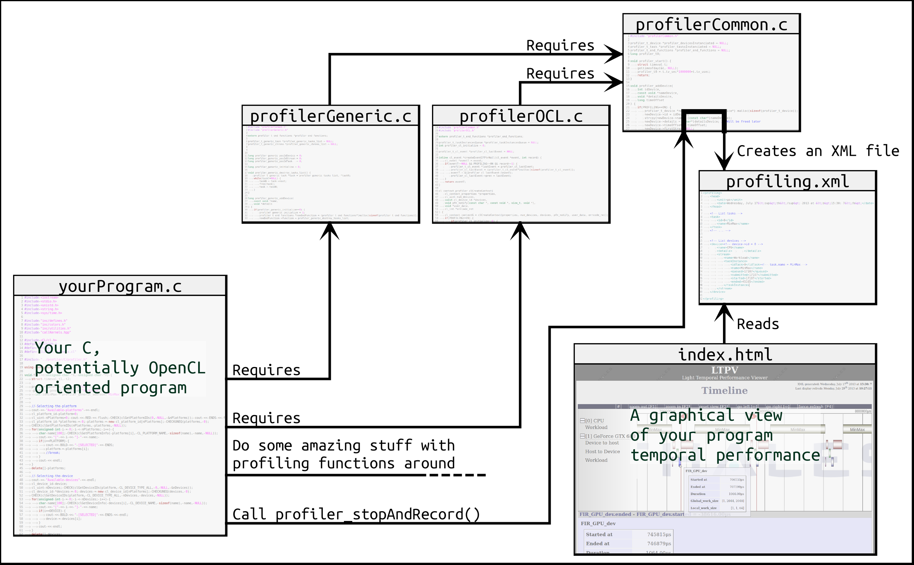

This project is a light, generic, graphical web-browser-based profiler.
LPTV is a graphical profiler built with Javascript/HTML5. It is typically used for displaying temporal behavior of an OpenCL application, but can easily be used with other languages. It reads information coming from an XML file that must be externally created. An API is provided for creating this XML information file quite quickly if your program uses OpenCL.
The data flow is basically the following:

Open "profiler/index.html" with Firefox or Chromium to see a typical result. Your should see a profiling example near to the following:
A light XML model is available here: profiler/inc/profiling_model.xml. Your can create your own XML creator, or use the APIs provided with the project. Did you create your own API? We would be glad to provide it with the project.
This stack aims to provide some facilities when using the profiler with OpenCL.
How to use it? The best way to know it is to look at the basic example given with this profiler. Take a glance at callKernels.cpp in particular.
1 - Replace the following function calls:
2 - Don't forget to call profiler_start() when you want the clock to turn, and to call profiler_stopAndRecord(const void *filename) at the end to create the XML file.
3 - Compile and run your program and open index.html?p=THEPATHTOYOURXMLFILE.xml
This project has been initiated by Simon DENEL at Thales Research & Technology.